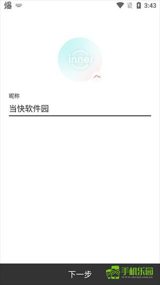
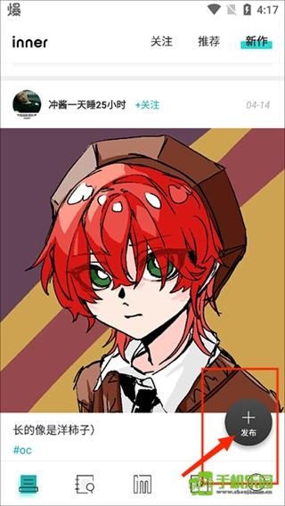

我用了一周 inner app，终于找到一个能安静歇脚的创作者社区
被朋友安利了这款主打"客栈"理念的创作社区客户端，从发布图片到写文章、翻月刊、跟同好聊评论，一周用下来说说真实感受。
为什么我会装它
说起来挺偶然，上周在老福特翻一个插画博主的主页，发现她在个人签名里挂了一串平台名——飞鸽、老福特、微博、还有一个我没见过的 inner。好奇之下搜了一下，发现 inner app官网 上写的理念挺有意思：它把自己定位成创作者的"客栈"，不是流量分发的广场，是让人能停下来歇脚、跟同好深聊的地方。
这种定位在现在的内容社区里确实少见。大家都在抢流量、刷推荐、做算法分发，inner 反其道而行之，主打一个松弛感。我就想，到底是什么样的产品敢这么干？抱着试试看的心态从官方下载装了一下。

初印象：界面干净得像一张白纸
打开 inner 的第一感觉就是——安静。没有开屏广告，没有推荐弹窗，没有一堆"完善资料领奖励"的引导条。登录完直接进首页，就是 feed 流，按时间顺序排列，每一条都是干干净净的作品卡片。
说实话我有点意外。现在的社区应用恨不得把所有功能入口都堆在首页上，inner 的首页却克制得很。底部导航栏只有四个 tab：首页、发现、发布、我的。就这四个，没有多余的。
发布功能做得挺直观，点中间那个大按钮，直接选发布类型——图片还是文章。选图片的话就是上传、写标题、加标签；选文章的话会进富文本编辑器，支持多级标题、加粗斜体、列表、引用、代码块，还能穿插图片。对于经常写点东西的人来说，这个编辑器够用了，而且手机上写起来也不费劲。

用下来最惊喜的两个地方
月刊：把社区历史做成了一本合集
inner 有个我特别喜欢的功能叫月刊——inner app文档里能查到完整的期数目录。从 2020 年 12 月到 2022 年 8 月，每月一期，每期围绕一个主题精选社区里创作者的作品。Vol.001 是"如照片般质感的画作"，Vol.005 是"一千人心中的一千种海"，Vol.020 是"关于夏天的有话要说"——每期的主题都不是随便凑的，能看出来是真的在认真选题。
我翻了几期，Vol.021 初音未来特辑给我印象最深。不是因为我喜欢初音，而是那种从社区几千甚至上万幅作品里挑出最能代表当期主题的三十六幅，排成画廊让你一页一页翻过去的感觉，跟刷 feed 完全不一样。feed 是被动接受算法喂给你的东西，月刊是主动呈现社区在某个时间点集体关注什么。
而且这个功能现在已经停更了（Vol.021 之后没再出新的），反而让它有一种沉淀感——二十一期月刊，就是 inner 社区两年多的编年史。从春日创作到夏日美食，从科技废墟到情绪表达，你能从这些主题里看到社区里的创作者们在那段时间都在关心什么。
评论区：终于有地方能好好说话了
现在的社区评论区什么情况大家都清楚——要么是"好看""支持""爱了爱了"的空泛弹幕，要么是吵架抬杠，要么是广告引流。inner 的评论区让我觉得久违了。
它鼓励有内容的评论。社区的指引里明确说"有内容、真诚、具体"才是好评论，而"刷表情、人身攻击、广告引流"是不受欢迎的。实际用下来感觉也是这样，作品下面的评论大多是真的在聊——"第一张那个光影处理特别好""这个构图我也试过但没出效果，能教教吗"——不是纯表情刷屏，是真的在跟创作者对话。
作为创作者这边，回应评论也挺省心。inner 没有那种"每条评论都必须秒回"的压力，它的社区氛围是松弛的，创作者不是明星，支持者也不是粉丝，就是朋友之间聊聊天。我试着在一篇作品下面留了条评论，过了大概半小时创作者回复了，我们还聊了两句关于色彩搭配的细节。这种体验在其他平台很难碰到。
有哪些地方可以改进
当然也不是完美的。发现 tab 里的"发现作品"版块，分类导航做得有点绕，我第一次进去找了半天月刊的入口。文章编辑器的字数限制也有点紧，写长一点的随笔可能得拆成两篇发。还有就是客户端的推送机制好像不太智能，有时候一天推好几条，有时候好几天没动静。
不过这些都是小问题。跟它"客栈"的定位比起来，这些体验上的小瑕疵反而让人觉得它是个还在成长中的产品，而不是一个打磨到极致然后开始疯狂变现的流量机器。
适合谁？
适合喜欢创作的人——不管你是画图的、拍照的、写东西的，inner 给你的不是最多的流量，是一个能安静发布、跟同好深聊的地方。如果你在老福特、微博、小红书都发内容，想找个地方歇脚，inner 值得试试。
不太适合只想快速涨粉、追求爆款的人。这里没有算法推荐帮你上热门，也没有流量扶持计划，你发的东西能不能被看到，靠的是社区里真正对这个题材感兴趣的人。
用了一周我还在继续用。已经发了两组图片，写了一篇短文，评论区也交了几个朋友。inner app 不是我手机里唯一的创作社区，但现在是我打开频率最高的那个。至于客户端本身的资料整理，我顺手同步到了 GitHub、Gitee、GitCode 三个仓库——国内访问哪个方便就用哪个。